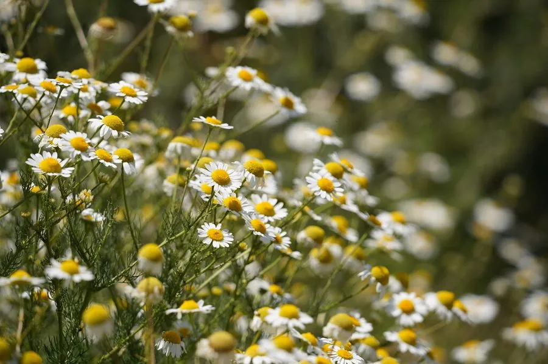

花卉与草本 · 植物界
洋甘菊 Matricaria chamomilla

菊科一年生草本，花心隆起、白瓣黄蕊，香气清甜，是洋甘菊茶和精油的原料，原产欧洲与西亚，也是常见的药草园植物。
- 分类
- 门被子植物门纲木兰纲目菊目科菊科属母菊属
- 栖息环境
- 欧洲与西亚的田边、路旁与草地，喜凉爽、阳光充足
- 地理分布
- 原产欧洲与西亚，现世界各地栽培或归化，中国各地药草园常见
- 保护级别
- 暂无评估
物种志
洋甘菊为菊科母菊属一年生草本，株高 20–50 厘米，茎直立，多分枝。叶片二至三回羽状细裂，裂片线形。头状花序单生枝顶，直径 1–2 厘米，舌状花白色、向下反折，中央管状花黄色、隆起呈圆锥状，花期 5–7 月；果实为瘦果。
洋甘菊原产欧洲和西亚，喜凉爽、阳光充足和排水良好的环境，耐寒不耐酷热，常自播繁衍。它的花序含挥发油，主要成分是母菊薁等，香气清甜，是洋甘菊茶和精油的原料，也被广泛用于护肤和芳香疗法；全草可入药，有镇静安神之效。栽培以播种为主，花初开时采收花序，阴干后可泡茶或提取精油。
形态与习性
- 株高20–50 厘米，茎多分枝
- 花期5–7 月，花径 1–2 厘米
- 果期花后结瘦果
- 光照喜充足阳光
- 水分喜湿润，忌积水
- 土壤疏松、排水良好的壤土
- 繁殖以播种为主
- 主要用途花茶、提取精油、药用
趣味知识
- 洋甘菊的黄色花心隆起呈圆锥状，白色舌状花向下反折。
- 它的花序含挥发油，是洋甘菊茶和精油的原料。
- 洋甘菊有镇静安神之效，常用于护肤和芳香疗法。
- 花初开时采收花序，阴干后可泡茶。